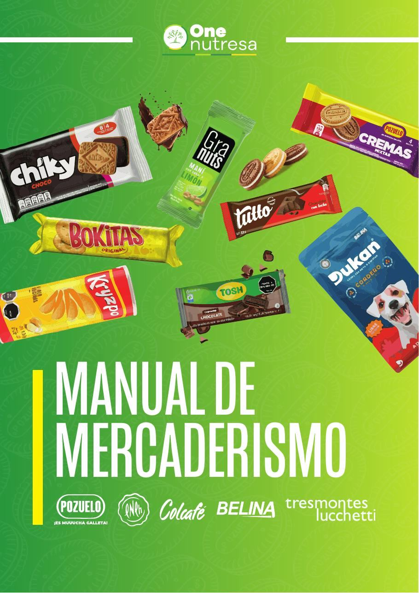

Portafolio gráfico — 2026
LUISCAMPOS
Diseño gráfico y comunicación visual. Estudiante en ULACIT, actualmente pasante de diseño en Pozuelo — marca, editorial, ilustración y empaque desde Costa Rica.
Scroll
Diseño gráfico y comunicación visual. Estudiante en ULACIT, actualmente pasante de diseño en Pozuelo — marca, editorial, ilustración y empaque desde Costa Rica.
Diseñador gráfico y estudiante de Comunicación Visual, enfocado en identidad de marca, diseño editorial e ilustración.
Trabajo entre lo académico y lo aplicado: sistemas de marca completos, piezas editoriales, ilustración y proyectos de empaque — siempre cuidando el detalle tipográfico y la consistencia visual de principio a fin.
Actualmente en pasantía de diseño gráfico en Pozuelo, donde desarrollo materiales visuales para las iniciativas de marketing y comunicación de la marca, colaborando con el equipo creativo en formatos digitales e impresos.
Empaque, editorial, identidad de marca e ilustración — académico y aplicado, siempre con producción lista para impresión o entrega final.

Caja de galletas — dieline listo para imprenta.

Caja de té — ilustración, patrón y dieline.

Manual de inducción de 31 páginas — Pozuelo.

Spread editorial — maquetación y duotono.

Afiche — tienda de té artesanal.

Afiche editorial — identidad sonora.

Portadas y afiches de evento.
Identidad — monograma y lockups.

Identidad — chicles funcionales.

Re-branding completo — de la investigación al merchandising.

Serie de personajes — línea y color.

Tinta y lápiz — cuaderno de bocetos.

Cápsula de estampados — mockups textiles.

Animación tipográfica — video.
Práctica profesional en curso.
Desarrollo de activos gráficos y materiales visuales en apoyo a las iniciativas de marketing y comunicación de la marca. Colaboración con el equipo creativo para producir contenido en formatos digitales e impresos, manteniendo la consistencia de marca y los estándares de calidad. Participación activa en la ideación y ejecución de conceptos visuales, incorporando retroalimentación del supervisor para refinar los entregables. Gestión y organización de archivos de diseño y librerías de activos para optimizar los flujos de producción del equipo.
Formación académica y capacitación complementaria.
Enfoque en narrativa visual, principios de motion design y producción de medios digitales.
Currículo internacional con énfasis en pensamiento crítico, comunicación y análisis.
Análisis y visualización de datos con Power BI (18 hrs) y Excel avanzado — tablas dinámicas y Excel BI (18 hrs).
Certificación de inglés avanzado nivel C1.